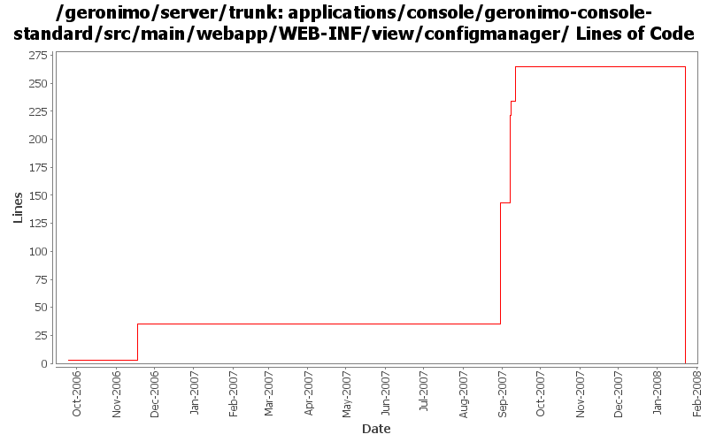

[root]/applications/console/geronimo-console-standard/src/main/webapp/WEB-INF/view/configmanager

| Author | Changes | Lines of Code | Lines per Change |
|---|---|---|---|
| Totals | 23 (100.0%) | 365 (100.0%) | 15.8 |
| jbohn | 4 (17.4%) | 329 (90.1%) | 82.2 |
| kevan | 8 (34.8%) | 33 (9.0%) | 4.1 |
| dwoods | 1 (4.3%) | 2 (0.5%) | 2.0 |
| djencks | 3 (13.0%) | 1 (0.3%) | 0.3 |
| pmcmahan | 2 (8.7%) | 0 (0.0%) | 0.0 |
| jdillon | 5 (21.7%) | 0 (0.0%) | 0.0 |
(GERONIMO-3747) Moved applications/* to plugins/*
0 lines of code changed in 5 files:
GERONIMO-3401 make expert mode stick using a session cookie and a little code cleanup
40 lines of code changed in 1 file:
GERONIMO-3401 make the expert mode work on IE and fix error in expert config check
25 lines of code changed in 1 file:
GERONIMO-3401 Add checkbox for expert mode when dealing with configurations, move expert config check to server, reformat confirmation messages
152 lines of code changed in 1 file:
GERONIMO-3401 Add stern warnings on uninstall, stop, and restart of Geronimo modules ... still working on expert mode filtering
112 lines of code changed in 1 file:
GERONIMO-3350 get rid of questionable getURLFor method
1 lines of code changed in 1 file:
GERONIMO-3264 Web accessibility updates for Admin Console - part 2
2 lines of code changed in 1 file:
GERONIMO-2537 Integrating yet another patch supplied by Jay McHugh. Thanks Jaysvn status! Adds apache license header to files in applications/
33 lines of code changed in 8 files:
GERONIMO-2478 ContextForwardServlet should have a registration mechanism. Merging rev 469724 from branches/1.1.
0 lines of code changed in 2 files:
GERONIMO-2248 show parent and child modules for each module
0 lines of code changed in 2 files: